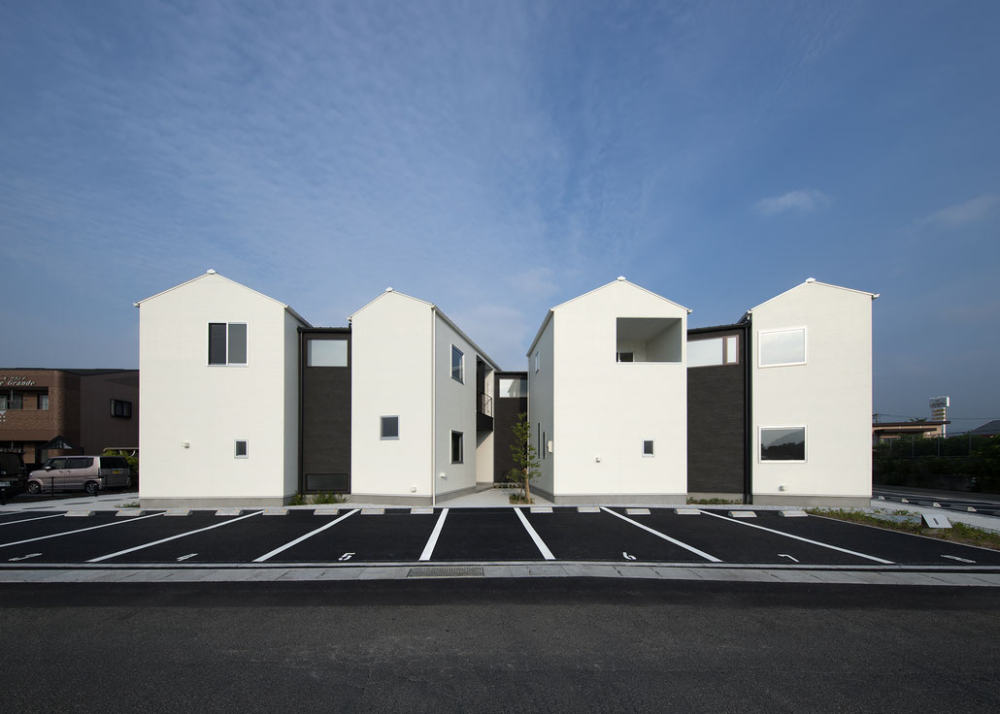
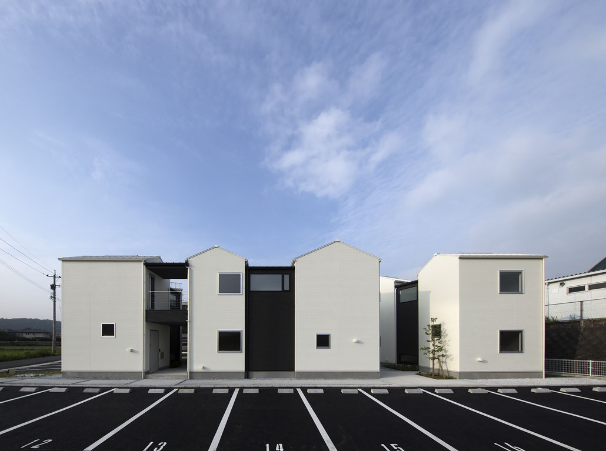
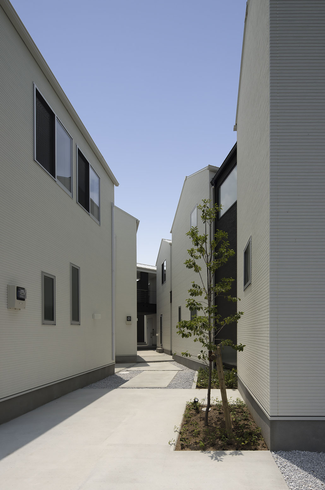
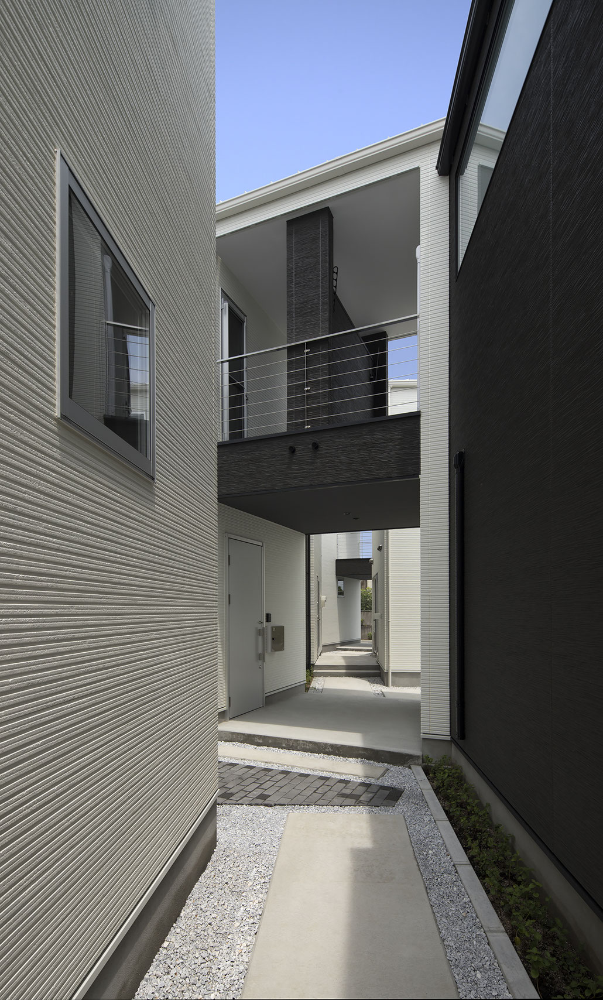
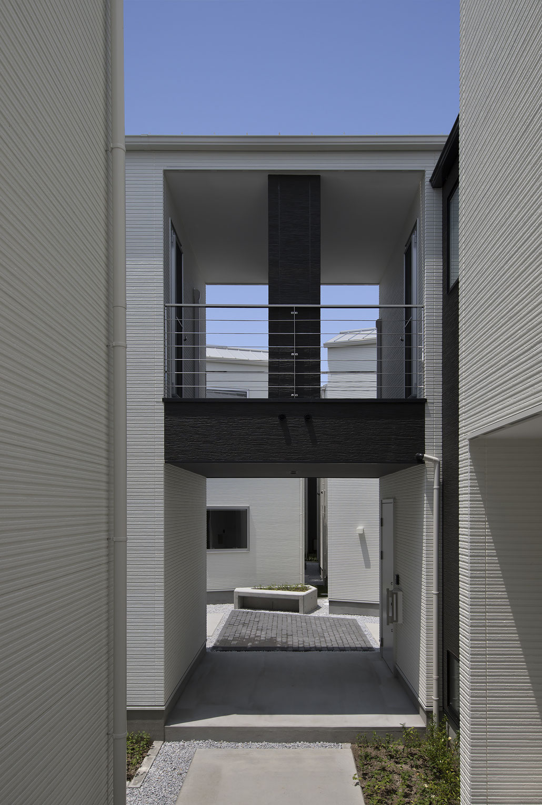
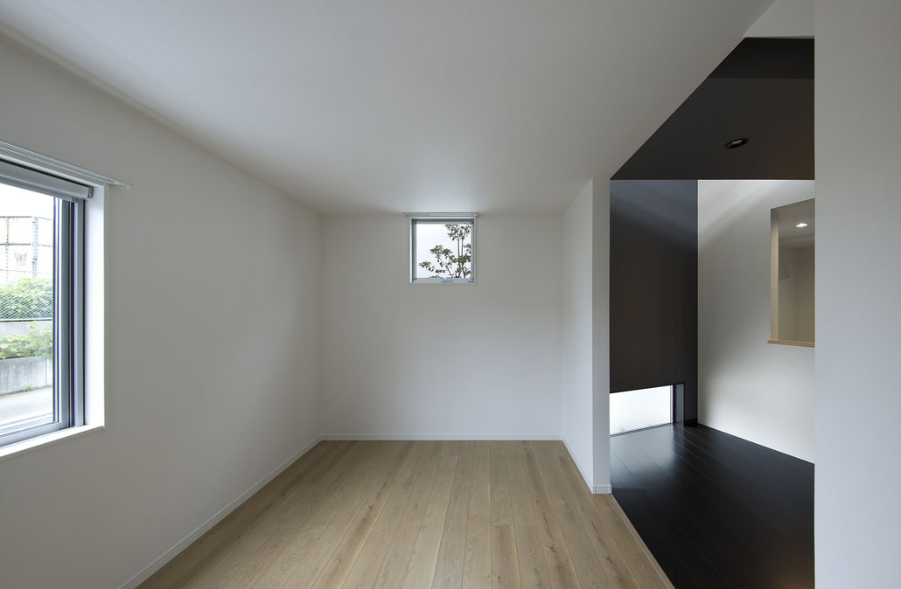
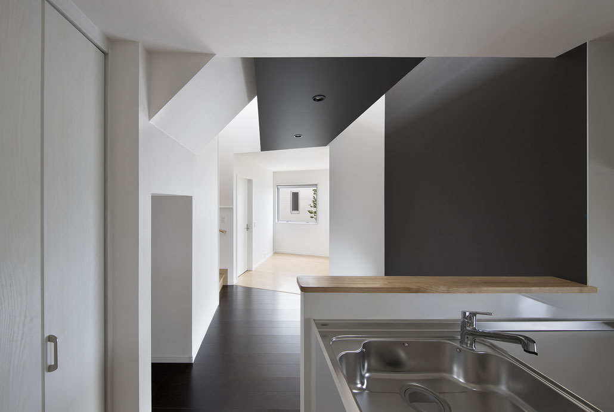
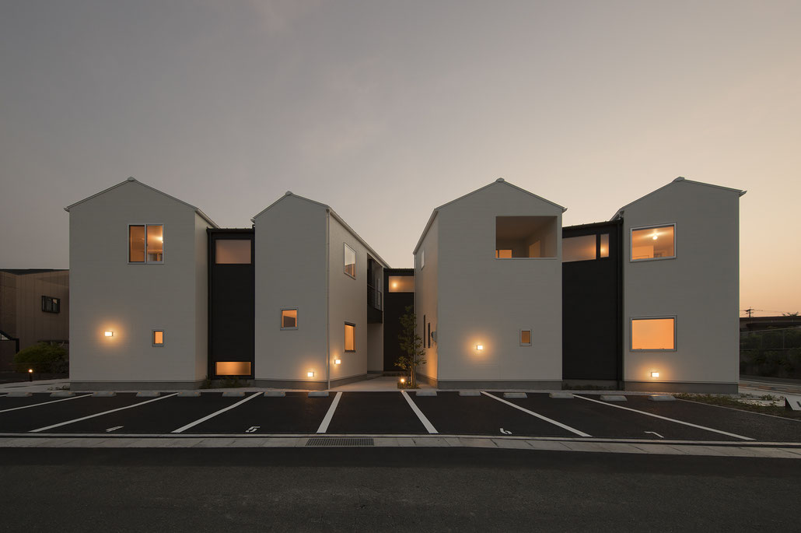
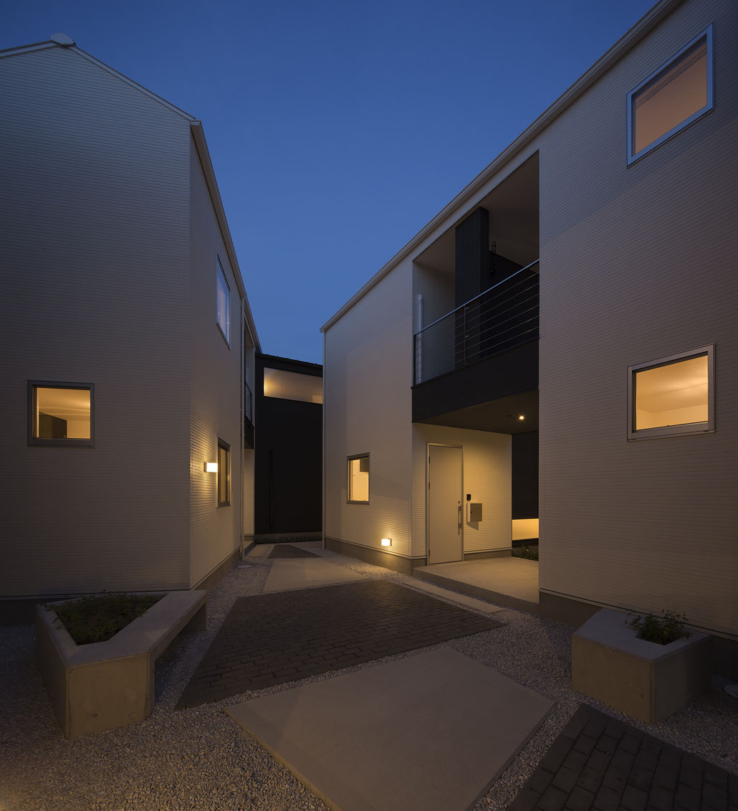
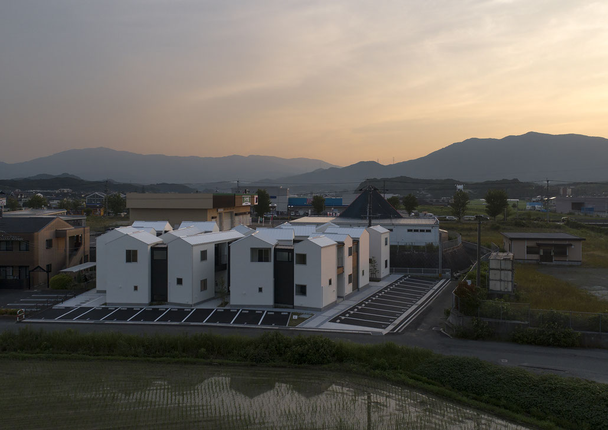

楽市のアパートメント
賃貸集合住宅 ／ 福岡県飯塚市
楽市のアパートメントは、福岡県飯塚市の幹線道路から一本入った敷地に建つ木造2階建てのメゾネット型賃貸アパートである。
10世帯の賃貸住戸をローコストの条件のもとで設計することを求められた。
不特定な入居者の入れ替わりを考慮し、造作でディテールを積み上げていくのではなく、既製品（標準ディテール）を多用しコストを抑えた。
地方都市における一般的な木造アパートと同等の建設コストにしながらも、いかに豊かな空間性を与えることができるかをテーマとした。
地方都市に点在する共同住宅・長屋は、建築を大きな1つのボリュームにまとめ、敷地の余った部分を住人の共用空間として確保する計画が多い。
また、建物先行の計画によって追いやられた共用空間は、完成後に閑散としている現状があり、常に利用されている空間とは言い難い。
本計画では、日々使われる外部空間を目指し、集まって住むための住環境の見直しを図った。
細分化した住戸ボリュームを変形敷地に沿うように配置し、建物のあいだに生じる外部空間を路地、中庭、ポーチ(上部バルコニー)として扱う。
路地は角度が与えられた住戸に挟まれることで、視線の方向性がぼかされながら幅の伸縮を繰り返す。
歩みを進めることで現れるスペースに路地が接続され、変化していく奥行は歩く豊かさを与える。
コンパクトにまとめられた各住戸は、2つの白のユニットと、その間に挟まれた黒の膜によって構成される。
白のユニットは、住戸の構造耐力を保持し、プライベート性の高い水廻りや寝室などを配置している。
黒の膜は、1階の居室に安定した光を落とすハイサイドライトを設けた吹抜を含み、密集した住戸群のなかでの住環境を補完する。
採算性が重視された一般的な木造賃貸アパートとの比較を行い、社会的なニーズを満たしながら形態・住環境改善の可能性を示した。
路地空間は、各住戸へアプローチするための通路であると同時に、密集した住戸群の住環境を改善する役割を果たしている。
点在する軒下空間は、入居者の生活の気配を感じることができる中間領域として機能し、路地空間に視覚的変化を与える。
専有部と共用部の領域が緩やかに重なり合い、入居者の個性の表出により展開される風景は、集まって住むことの豊かさになると考えている。
入居者によって彩られる外部空間がコミュニティ形成のきっかけとなることを期待している。
- 敷地
- 福岡県飯塚市
- 構造
- 木造2階建
- 種別
- 新築
- 用途
- 共同住宅
- 施工
- (株)春田建設
- 竣工
- 2019.07
- 写真
- Kouji Okamoto / Techni Staff









